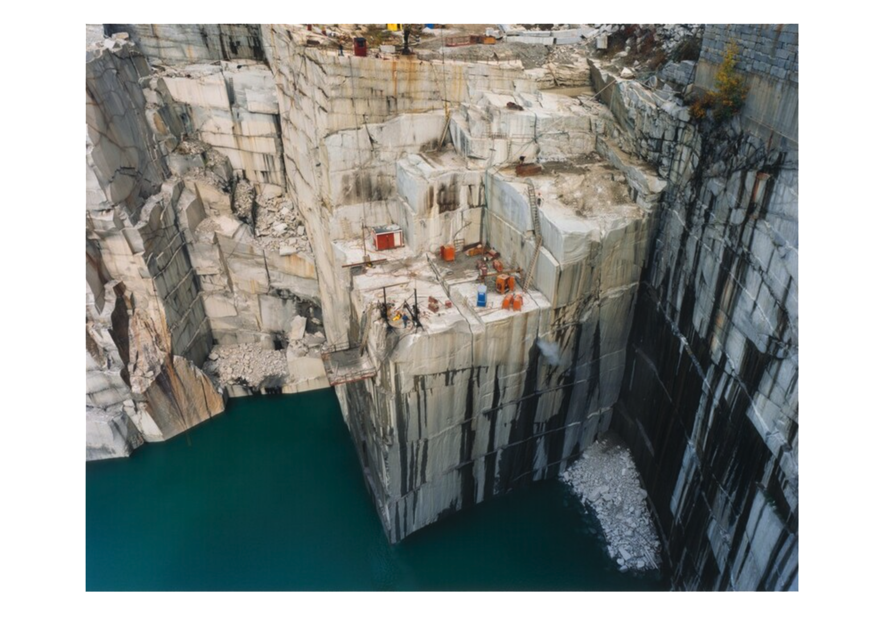

Sustainable Systems Fall 2026: Syllabus


Edward Burtynsky | Rock of Ages #7, Active Granite Section, Wells-Lamson Quarry, Barre, Vermont
🗺️️ Course Overview
- PUFY 1100 A31 Sustainable Systems 12953
- Class Modality: In-Person | On-Campus
- Class Schedule: Thursday | 4:00 p.m.– 6:40 p.m.
- Class Location: Parsons 2 W 13th Room 503
👤 Faculty Instructor
- Stephen Metts | he/him
- 📧 Email | mettss@newschool.edu
- Office Hours: Available prior & after class meetings - On-Campus
- Response Policy: Contact via email; daily response window
🗓️ Weekly Class Session
- Thursday (08/26/2026 - 12/14/2026)
- ⏰ 4:00 p.m.– 6:40 p.m.
- 🏛️ Building: Parsons 2 W 13th Street Building
- 🚪 Room: 503
- 📅 Course Calendar
🏙️ Course Description
Everything exists within systems, and anything we extract from the earth must ultimately return to it. As our world faces unprecedented challenges - from climate change and limited resources to economic instability and social inequality - our need for sustainable approaches is urgent.
How can designers and artists create and engage with objects, materials, and systems in ways that are socially, environmentally, and economically sustainable? We begin to address this question through creative practice and scientific inquiry, shifting ‘sustainability’ from an abstract idea to a way of thinking, making, and doing.
Using the framework of systems thinking, Sustainable Systems cultivates awareness of the interconnectedness between the many elements of the global environmental crisis. It highlights the crucial role of design in addressing sustainability and resilience. The course aims to create an emotional, empathetic and intellectual connection with the life forms and environments that bear the burden of our choices.
Course Framework: Four Lenses
This section of Sustainable Systems (A31) approaches these questions through four interconnected lenses: Underland, Energy, Making, and the Cloud. Together, the lenses allow us to examine human relationships with the physical world across radically different scales and spans of time — from geological processes and the material ground beneath us, to the energy systems that enable contemporary life, the objects and materials we make and consume, and the seemingly immaterial digital networks whose data centers, energy demands, material resources, and physical infrastructures extend across landscapes and around the planet.
The four lenses provide a structure for moving between earth, resources, energy, materials, technology, human activity, and time. Rather than treating sustainability as a single subject or problem, we will use these lenses to identify connections between systems that are often studied separately and to consider how actions at the scale of a material, object, or design decision participate in much larger environmental and social systems.
Central to this approach is the relationship between visibility and disappearance. Systems look different depending upon the scale, timeframe, and form of representation through which we encounter them. Changing scale can reveal relationships that were previously invisible while causing others to disappear. A building may make energy consumption visible while concealing the territories of extraction that support it; an everyday object may reveal material and design decisions while obscuring the infrastructures, labor, energy, and waste systems through which it came into being.
Throughout the course, students will therefore move deliberately between scales, times, and forms of representation, asking: What becomes visible? What disappears? Mapping, drawing, research, discussion, and making will be used not simply to describe systems, but to reveal relationships among them and to critically examine what any particular representation leaves out.
Topics
- Natural resources (Underland; material origins and transformations; deep time; natural forms and systems)
- Climate crisis (Energy; energy systems, infrastructure, extraction, consumption, externalities, and climate)
- Human and ecosystem health (relationships among human activity, environments, materials, technologies, and living systems across scales)
- Environmental ethics and economics (Energy + Making + Cloud; environmental justice, material cycles, circularity, production, consumption, infrastructure, and the distribution of environmental costs and benefits)
Course Methods
Throughout the semester, we will move between observation, research, representation, mapping, and making. Students will examine systems across different spatial and temporal scales, considering how changing scale or representation can reveal certain relationships while causing others to disappear. Across these methods, we will repeatedly ask: What becomes visible? What disappears?
Mapping will be a central research and representational method. Students will learn introductory GIS techniques and use spatial data to give cartographic form to themes and questions emerging from the four lenses. Mapping will be used not simply to locate things, but to investigate relationships, patterns, networks, infrastructures, scales, and consequences that may otherwise remain difficult to see. Students will also consider maps as conceptual models: representations that make particular relationships visible while necessarily leaving others out.
We will also investigate shapes, forms, and organizational patterns found in nature, moving between observation, abstraction, drawing, mapping, and physical representation. These investigations will consider how form emerges from environmental processes and systems and how designers can translate and reinterpret those structures across different scales and modes of representation.
Finally, students will engage sustainability through material practice and making. Through hands-on investigations of materials, transformation, assembly, reuse, and fabrication, we will consider where materials come from, how they are processed and used, and what happens to them afterward. Making therefore becomes another means of investigating systems: connecting the immediate physical decisions of design practice to larger questions of resources, extraction, energy, infrastructure, waste, circularity, and time.
🧩 Themes and Areas of Investigation
Systems and Interconnection: Seeing Relationships
- Students develop systems thinking as a way of understanding relationships among earth, resources, energy, materials, technology, human activity, and living systems.
Earth and Deep Time: Understanding Material Origins
- Students investigate the physical earth as both a dynamic system and the source of the materials we use, moving between human timescales and the much longer durations of geological and environmental processes.
Scale, Visibility, and Disappearance: From Material to Planet
- Students move across spatial and temporal scales, examining how materials, objects, buildings, infrastructures, landscapes, territories, and planetary systems are interconnected. Changing scale becomes a critical method of investigation: revealing relationships that may otherwise remain invisible while recognizing what can disappear from view at any particular scale.
Energy and Infrastructure: The Spatiality of Systems
- Students investigate the physical systems that support contemporary life, examining how energy, resources, technologies, and infrastructures occupy and connect landscapes and territories. Particular attention is given to the relationships between sites of extraction, production, transmission, consumption, and the uneven distribution of environmental and social consequences.
Mapping Systems: Data, Geography, and Representation
- Students use QGIS, spatial data, mapping, and diagramming to give cartographic form to relationships, patterns, networks, infrastructures, scales, and consequences that may otherwise remain difficult to see. Students consider how maps function as conceptual models that reveal particular relationships while necessarily leaving others out.
Natural Forms: Observation, Process, and Representation
- Students investigate shapes, patterns, and organizational structures found in nature, moving between observation, abstraction, drawing, mapping, and physical representation to understand how form emerges from environmental processes and systems.
Materials and Making: From Extraction to Afterlife
- Students investigate materials through hands-on processes of transformation, assembly, reuse, and fabrication, considering where materials originate, how they are made and used, and what happens to them after their intended use ends.
Synthesis: Designing Within Systems
- Students bring together research, mapping, representation, material investigation, and making to investigate complex environmental and human systems across scales, considering both the relationships their work makes visible and those that may remain hidden or disappear.
✅ Learning Outcomes
By the successful completion of this course, students will be able, at an introductory level, to:
L1.
Gain a foundational understanding of ecological systems and the evolving challenges these systems face due to human activity.
L2.
Evaluate and reflect on environmental issues through social, economic, and ethical lenses, grounded in indigenous knowledge and diverse worldviews.
L3.
Utilize and explore systems thinking to investigate and address environmental issues, including the concept of circularity as it applies to finite resources, supply chains, and continued human demand.
L4.
Recognize the role art and design play in exploring, addressing, and communicating principles of sustainability and resilience.
L5.
Develop basic proficiency in research, evidence-based methodologies, and critical thinking in sustainable design.
L6.
Understand the value of collaboration and community in addressing environmental challenges, considering the well-being and the imagined perspective of human and non-human species, as an important component in the design process.
L7.
Archive and document work in a reflective manner for the Learning Portfolio. This will include writing clearly about work including: process, evaluation, analysis, and reflection.
🗓️ Weekly Course Schedule
| Course Progression | Week / Date | Lens | Scale | Weekly Focus | Primary Activity / Event |
|---|---|---|---|---|---|
| FOUNDATIONS — Learning to See Systems | W01 · 08/27 | Underland | Planet / Deep Time | The Dymaxion Map: Cartography as Conceptual Model | Introduce systems thinking through cartography. Dymaxion reframes Earth spatially while Underland reframes it temporally through deep time. Representation asks: what becomes visible and what disappears? |
| W02 · 09/03 | Energy | Global / Territorial | Energy Has a Geography: Infrastructure, Networks & Flows | Introduce the spatial concepts of Climate Crisis, Energy Violence. Trace extraction → processing → transmission → consumption → externalities. QGIS + GeoLibre with instructor-provided data. Launch the NYC infrastructure investigation. | |
| W03 · 09/10 | Energy / Underland | Planetary / Atmospheric | Climate as a System | Climate as an interconnected Earth system involving carbon, energy, atmosphere, oceans, land, feedback, and multiple temporal scales. | |
| W04 · 09/17 | Energy | Community → Territorial | Environmental Justice, Externalities & Capitalism as a System | Examine how environmental costs and benefits are produced and distributed unevenly and connect environmental justice to the spatial organization of infrastructure and externalities. | |
| W05 · 09/24 | Making | Object → Planet | Plastic: Material, System & Afterlife | Screen This Mortal Plastik. Follow plastic through extraction, energy, production, consumption, bodies, waste, environment, and material afterlife. | |
| INVESTIGATION — Systems in Action | W06 · 10/01 | Cloud | Building → Planet | AI, Data Centers & the Physical Cloud | Lecture/discussion on AI data centers: energy, water, land, buildings, materials, networks, and communities. Introduce debate, form teams, and begin research. |
| W07 · 10/08 | Cloud → Making | Infrastructure → Object | AI Data Center Debate | Team presentations and debate. Second half introduces the Object as a System, shifting from distributed infrastructure toward material and object scale. | |
| W08 · 10/15 | Across the Lenses | Across Scales | Midsemester Individual Meetings | Online individual meetings — no in-person class. Review progress and connections among lenses, scales, methods, and course work. | |
| W09 · 10/22 | Making | Material → Object | Materials, Health & Design | Material choice, health, embodied impacts, sourcing, and design responsibility. Healthy Materials Lab on-campus visit. | |
| W10 · 10/29 | Making | Object → City / Region | Material Flows, Waste & Circularity | Material lifecycles, waste, recovery, sorting, recycling, and circular systems. Brooklyn recycling facility field trip (date provisional). | |
| W11 · 11/05 | Making / Underland | Material → Object | Object, Material & Making | Hands-on investigation connecting material origins, transformation, assembly, use, reuse, and afterlife. | |
| SYNTHESIS — Bringing Systems Together | W12 · 11/12 | All Four Lenses | Across Scales | Final Project: Question + System | Launch final project. Identify a system/question, appropriate scales, and combinations of research, mapping, representation, and/or making. |
| W13 · 11/19 | All Four Lenses | Across Scales | Final Project: Research & Development | Develop research and systems analysis; move deliberately between scales and representations. | |
| 11/26 | — | — | Thanksgiving — No Class | No class and no assignment due. | |
| W14 · 12/03 | All Four Lenses | Across Scales | Final Project: Development & Iteration | Work-in-progress review, critique, testing, iteration, and refinement. | |
| W15 · 12/10 | All Four Lenses | Across Scales | Final Project: Presentation & Synthesis | Final presentations; communicate relationships among systems, scales, and course lenses; reflection and Learning Portfolio. | |
| FINAL SUBMISSION | 12/16 | All Four Lenses | Across Scales | Final Project Due | Completed final project submitted. |
📝 Assignments
| Class / Date | Weekly Focus | Assignment / Deliverable | Learning Outcomes | Homework / Preparation for Next Session |
|---|---|---|---|---|
| Class 01 · Thu 08/27 | The Dymaxion Map: Cartography as Conceptual Model | Dymaxion Map exercise introducing cartography as a conceptual model; investigate how changes in representation and scale make particular spatial relationships visible while causing others to disappear. | L3, L4, L5 | Assigned Underland reading and introductory systems-thinking material; prepare for technical mapping and global infrastructure investigation. |
| Class 02 · Thu 09/03 | Energy Has a Geography: Infrastructure, Networks & Flows | QGIS + GeoLibre technical mapping exercise using instructor-provided data to trace global infrastructures and flows; launch Infrastructure in Plain Sight, documenting evidence of the systems required to sustain NYC. | L1, L3, L4, L5 | Continue NYC infrastructure investigation; assigned reading from Climate Crisis, Energy Violence on the spatiality of energy systems and fossil-fuel infrastructure; prepare for climate systems. |
| Class 03 · Thu 09/10 | Climate as a System | Climate systems exercise connecting energy, carbon, atmosphere, oceans, land, feedback, geography, and time; relate local and territorial observations to planetary processes. | L1, L3, L5 | Complete assigned climate reading and NYC infrastructure documentation; prepare material connecting infrastructure to environmental and social consequences. |
| Class 04 · Thu 09/17 | Environmental Justice, Externalities & Capitalism as a System | Environmental justice and externalities exercise examining where environmental benefits and burdens become visible across different communities, territories, and scales. | L1, L2, L3, L5 | Assigned reading on environmental justice, externalities, and material systems; prepare for This Mortal Plastik. |
| Class 05 · Thu 09/24 | Plastic: Material, System & Afterlife | Screening and discussion of This Mortal Plastik; material-system exercise tracing plastic through extraction, energy, production, consumption, bodies, waste, environment, and afterlife. | L1, L2, L3, L4 | Begin Grounding the Cloud reading; assigned preparation on AI/data-center infrastructure for the following week’s lecture and debate launch. |
| Class 06 · Thu 10/01 | AI, Data Centers & the Physical Cloud | Data-center systems investigation; debate teams formed and positions assigned. Teams begin collaborative research into energy, water, land, materials, infrastructure, economic benefits, communities, and environmental consequences. | L1, L2, L3, L5, L6 | AI Data Center Debate preparation: teams research assigned positions, develop evidence-based arguments, prepare presentation, and anticipate counterarguments. |
| Class 07 · Thu 10/08 | AI Data Center Debate | Team presentations and structured in-class debate using research and evidence. Second half introduces the Object as a System and the transition from infrastructure to materials and making. | L2, L3, L5, L6 | Prepare materials/documentation for individual midsemester meeting; introductory Cradle to Cradle reading and object/material investigation. |
| Class 08 · Thu 10/15 | Midsemester Individual Meetings | Online individual meetings — no in-person class. Review course progress, participation, Learning Portfolio, and connections among lenses, scales, methods, and completed work. | L5, L7 | Continue Cradle to Cradle reading; select/document an object or material for investigation; prepare for Healthy Materials Lab visit. |
| Class 09 · Thu 10/22 | Materials, Health & Design | Material/object investigation + Healthy Materials Lab on-campus visit. Examine material origins, composition, health, embodied impacts, sourcing, and design responsibility. | L1, L2, L3, L4, L5 | Develop material/object investigation; assigned reading on healthy materials, circularity, and material lifecycles; prepare for recycling facility field trip. |
| Class 10 · Thu 10/29 | Material Flows, Waste & Circularity | Brooklyn recycling facility field trip (date provisional). Observe material collection, sorting, processing, recovery, waste, and circularity as an urban-scale system. | L1, L3, L4, L5 | Field-trip documentation and reflection; develop material-flow/system representation connecting object → waste stream → city/region → material afterlife. |
| Class 11 · Thu 11/05 | Object, Material & Making | Hands-on material/object investigation connecting origins, transformation, assembly, use, reuse, and afterlife. | L3, L4, L5 | Complete making/material study; begin considering a system, question, and appropriate scale(s) for the Final Project. |
| Class 12 · Thu 11/12 | Final Project: Question + System | Final Project launch. Identify a system or question; establish relevant lenses and scales; determine what should become visible through the project and select appropriate research, mapping, representation, and/or making methods. | L1, L2, L3, L4, L5 | Develop Final Project proposal, research, source material, and initial representations for in-class review. |
| Class 13 · Thu 11/19 | Final Project: Research & Development | Final Project work-in-progress review; research and systems analysis across scales; test mapping, representation, and/or making approaches. | L2, L3, L4, L5, L6 | Continue Final Project development. No assignment due during Thanksgiving break. |
| Thu 11/26 | Thanksgiving — No Class | NO CLASS | — | NO ASSIGNMENT DUE. |
| Class 14 · Thu 12/03 | Final Project: Development & Iteration | Work-in-progress review, critique, testing, iteration, and refinement of Final Project. | L3, L4, L5, L6, L7 | Complete and prepare Final Project for presentation; update Learning Portfolio documentation and reflection. |
| Class 15 · Thu 12/10 | Final Project: Presentation & Synthesis | Final Project presentations. Communicate relationships among systems, scales, course lenses, and methods; final discussion and reflection. | L1–L7 | Revise and complete Final Project following presentation feedback; complete Learning Portfolio. |
| Final · Wed 12/16 | Final Project Submission | Final Project due. | L1–L7 | — |
This schedule is subject to change at the discretion of the instructor. “L” designations specified in the course schedule indicate each week’s alignment with specific course learning objectives. This alignment includes corresponding weekly assignments.
🖊️ Materials and Supplies
Please note that there may be materials costs associated with this seminar/studio course and you should expect to purchase up to $50 on supplies and trips. The expected cost does not include printer points that you receive as a student, nor does it include the materials from the materials kit that is purchased as you enter your first year. You can find a list of the materials kit items on the First Year advising page.
In all of your courses, you are encouraged to be mindful of resource consumption related to project materials. Consider upcycling or sourcing from past projects. You can also visit the University’s shared material reuse hub (location will be shared in August).
Required Materials
Students are required to maintain a sketchbook or working notebook throughout the course for in-class exercises, research, diagrams, material studies, and the planning and development of making projects. The sketchbook should function as an active record of process: a place to collect observations, test ideas, work through forms and systems, develop drawings and diagrams, and plan how projects will move from initial research and concepts into physical or digital form.
You may choose between a smaller, portable sketchbook (approximately 5” × 7” to 6” × 9”) or a larger-format pad (8.5” × 11” or 11” × 17”), depending on your working style. A smaller sketchbook is easy to carry and useful for fieldwork, quick studies, notes, and observations. A larger format provides more space for diagrams, mapping studies, material investigations, and the development of more complex drawings and project plans.
Sketchbooks should have at least medium-weight paper (approximately 100 gsm or greater) suitable for ink. A harder surface such as the Strathmore 300 or 400 Series Bristol Smooth works very well with Sakura Pigma Micron Pens and Staedtler Pigment Liner Pens, both highly recommended drawing instruments. Similar pen styles such as Copic Multiliner Pens and artPOP! Fineliner Black Pens work equally well. Regardless of the specific brand, an assorted set containing several tip sizes is highly recommended to allow different types of lines, notation, diagrams, and drawing within a single study.
Along with a sketchbook and pen set, students should have a lightweight 6” or 12” ruler, such as the Helix Shatter Resistant Ruler. The ruler will be useful for diagrams, measured studies, mapping exercises, material investigations, and planning the dimensions, relationships, and assembly of physical work.
Additional materials required for specific making exercises will be introduced during the semester. Whenever possible, students will be encouraged to work with reused, recovered, repurposed, or readily available materials rather than purchasing new materials specifically for an assignment.
🗺️ Spatial Mapping Tools
Early in the course, the instructor will guide students through downloading and installing the primary spatial software used in the class on their personal laptops (macOS or Windows). These tools will be used throughout the term to access, visualize, map, and analyze spatial data related to the environmental and human systems investigated in the course.
The course will utilize the Long Term Release (LTR) of QGIS, a widely used open-source Geographic Information System, as the primary desktop mapping platform. Students will also use GeoLibre, a browser-based spatial data platform that will work alongside QGIS for accessible exploration, visualization, and mapping of geographic data without requiring additional software installation.
No prior experience with these tools is required. Step-by-step installation guidance for QGIS and introductory instruction for both QGIS and GeoLibre will be provided early in the course. All datasets used during the course will also be provided for easy download and access on an exercise-by-exercise basis.
📚 Required Course Readings
The course is structured around four core reading references that correspond to the four interconnected lenses of Underland, Energy, Making, and the Cloud. Selected chapters and excerpts from these texts will be assigned throughout the semester.
Students are not required to purchase these books. All required reading materials will be made available to students through the weekly reading assignments on Canvas.
These four titles establish the core reading framework for the course but do not constitute the complete reading list. Weekly readings will be augmented by additional texts, articles, essays, case studies, visual materials, and other resources introduced in class or assigned through Canvas. These supplementary materials will allow us to connect the four lenses to contemporary issues, specific places, design practices, and the subjects under investigation each week.
| Lens | Core Reading | Purpose in the Course |
|---|---|---|
| UNDERLAND | Macfarlane, Robert. Underland: A Deep Time Journey. New York: W. W. Norton & Company, 2019. | Introduces deep time as a way of understanding the physical world. The text allows us to move between human experience, landscape, geology, material traces, and processes whose durations extend far beyond an individual human lifespan. |
| ENERGY | Metts, Stephen, and Mary Finley-Brook. Climate Crisis, Energy Violence: Mapping Fossil Energy’s Enduring Grasp. [Publication information to confirm.] | Examines energy as a spatial, material, environmental, and social system. The text connects energy production and consumption to infrastructure, landscapes, communities, extraction, and the uneven consequences of contemporary energy systems. |
| MAKING | McDonough, William, and Michael Braungart. Cradle to Cradle: Remaking the Way We Make Things. New York: North Point Press, 2002. | Examines how designers understand materials, production, use, waste, and circularity. The text asks students to reconsider the conventional linear relationship between extraction, making, consumption, and disposal. |
| THE CLOUD | Fard, Ali. Grounding the Cloud: Urbanism in the Shadow of Data. Minneapolis: University of Minnesota Press, 2026. | Makes the supposedly immaterial digital world physically and spatially visible. The text connects data centers and digital networks to buildings, land, energy, water, materials, infrastructure, communities, and planetary resource systems. |
🛠️ Assessable Tasks
Throughout the semester, students will engage in a range of assessable activities and projects that connect the course’s four lenses — Underland, Energy, Making, and the Cloud — to research, representation, mapping, discussion, and material practice.
Students will:
- Identify and apply key concepts and terminology related to sustainability and systems thinking.
- Observe, draw, and analyze shapes, patterns, and organizational forms found in natural systems.
- Develop and iterate drawings, diagrams, maps, and plans as part of the research and making process.
- Use spatial software and spatial data to map environmental and human systems across different geographic scales.
- Investigate how materials, energy, infrastructure, technology, and human activity connect across spatial and temporal scales.
- Research environmental, social, economic, and technological arguments for a collaborative data center debate.
- Identify and communicate the advantages, consequences, and tradeoffs associated with particular technologies and infrastructures.
- Investigate materials through hands-on experimentation, transformation, assembly, reuse, and making.
- Map the systems and material flows associated with objects, resources, technologies, or infrastructures.
- Research and analyze examples of sustainable, circular, adaptive, and regenerative approaches to art and design.
- Collaborate with others to develop questions and arguments concerning complex sustainability issues.
- Synthesize research, mapping, representation, and making through individual and collaborative project-based work.
- Document and reflect upon research, process, iteration, and completed work through the Learning Portfolio.
Further, assessable tasks are components, both within and outside the classroom, designed to support course learning objectives. This course emphasizes creative work, research, collaboration, and mastery of course content. Tasks occur within the following six course benchmark categories:
1. Attendance
Attendance is vital to success in this course. Students will learn through direct instruction and engagement with their peers. Poor attendance will adversely affect grades, therefore students must communicate clearly and proactively with instructors regarding absences.
Many of the course’s assessable activities take place during class meetings and depend upon participation in lectures, discussions, demonstrations, workshops, collaborative work, and other in-class activities. Students cannot fully accomplish these components of the course without being present and actively engaged.
2. Participation
Class participation is integral to student success and is a major portion of the course grade. Participation-related activities may include, but are not limited to:
- Work in progress reviews
- In-class and online discussions
- In-class exercises
- Weekly in-class assessments
- Collaborative research and group work
- Midterm check-in*
- Contribution to critiques and presentations
*Mid-term check-ins are a required participation component. They provide a dedicated space to share any challenges students may be facing, provide feedback, and ask questions.
Participation in this course is closely connected to assessment. Each class meeting introduces concepts, methods, and forms of practice that students will apply through discussion, exercises, mapping, drawing, making, and other forms of in-class work. Weekly assessments completed during class will provide an ongoing measure of students’ engagement with and understanding of that day’s lecture topics and activities.
3. Quizzes and Weekly Assessments
Reading Quizzes: Students will complete short quizzes connected to assigned readings. These quizzes are intended to support consistent engagement with the course’s core texts and supplementary weekly readings and to reinforce important concepts and terminology.
Weekly In-Class Assessments: Students will complete an assessable activity during each class meeting related to that day’s lecture topics, discussion, demonstration, or in-class work. The format may vary according to the material being studied and may include short written responses, diagrams, mapping exercises, drawings, analyses, material studies, or other forms of applied work.
Together, reading quizzes and weekly assessments provide a continuous record of student engagement and understanding throughout the semester rather than concentrating assessment only at the midpoint and end of the course.
4. Project-Based Learning
Students explore real-world challenges through deep inquiry, collaboration, and creative works, resulting in reports, presentations, art pieces/installations, strategic interventions, etc.
Research and Analysis (RA): These assignments should emphasize developing critical inquiry skills as students engage in focused research to gather and evaluate credible information. Students should formulate meaningful questions and be guided toward an interdisciplinary analysis of complex systems.
Experience and Analysis (EA): These assignments should emphasize learning through direct engagement with places, people, or processes, followed by critical analysis and structured reflection. Experiences may include site visits, hands-on labs, materials exploration, artistic processes, community engagement, etc. Experiential learning should be supported by active reflection that connects to each student personally, creatively, or academically.
Creative Works (CW): These assignments invite students to explore environmental and sustainability topics through creative practice and artistic expression. Creative work within this context offers students an opportunity for self-expression and can be a powerful tool for critical engagement, public communication, and systems awareness. Students are expected to reflect on their work with artist statements and/or analyses of their intent, context, and connections between their work and the themes of the course.
Systems Mapping : The Systems Mapping assignment challenges students to study complex environmental issues by visualizing relationships, causal and feedback loops, and interdependencies. Students will create conceptual maps (i.e. influence maps, causal loop diagrams, stakeholder networks, etc.) to identify patterns, study dynamics, and potential intervention points.
5. Midsemester and Final Projects
Students will complete larger project-based assessments at the midsemester and end of the semester. These projects provide opportunities to synthesize the concepts, methods, and forms of representation developed through the weekly course work.
The midsemester work will include a collaborative component, allowing students to research, develop, and communicate different positions within a complex sustainability issue. Individual contributions will remain an important component of assessment within collaborative work.
The Final Project will provide a culminating opportunity for students to synthesize research, systems thinking, mapping, representation, and/or material making through an individually developed body of work.
Detailed requirements, deliverables, and associated Learning Outcomes (L1–L7) will be identified in the individual project assignments.
6. Documentation and Submission for Project-Based Learning
Students must document their processes throughout their projects’ inception, iterations, and finalization. Documentation is meant to act as a record for the student and as a summary of their progress in the course. Students are expected to submit their work to Canvas, Learning Portfolio, or a designated Google folder throughout the semester.
📚 Learning Portfolio
The Learning Portfolio is a place to document, organize, and reflect upon your work throughout the semester. It creates connections between courses and across your years of study at Parsons while providing a record of how your ideas, methods, and creative practices develop over time.
In Sustainable Systems, the Learning Portfolio should be used to document not only what you make, but how your thinking and work develop. Sustainability involves understanding relationships between systems, materials, technologies, environments, and human activity. Your portfolio should make these relationships—and your process of investigating them—visible.
Portfolio entries may include:
- research, notes, and questions that contribute to the development of a project;
- sketches, diagrams, and studies from your working notebook;
- systems maps and other forms of visual analysis;
- QGIS maps and cartographic studies;
- observations and documentation from fieldwork and in-class activities;
- material experiments, prototypes, tests, and iterations;
- research and evidence developed for discussions and debates;
- individual and collaborative project development;
- completed creative work; and
- written reflection on your process, decisions, discoveries, successes, and challenges.
Students should go beyond posting a final image or completed project. Portfolio entries should tell the story of the work: where an idea began, how it was investigated, what changed through research and experimentation, and how the final outcome developed.
The portfolio is therefore both an archive and a reflective tool. It should demonstrate connections between research, systems thinking, mapping, representation, material investigation, and making while providing evidence of your development throughout the semester.
Learning Portfolio engagement is an ongoing component of the course and should be maintained throughout the semester rather than assembled only at its conclusion.
🤝 Learning Together / Community Agreement
This course depends upon active participation, collaboration, discussion, and shared work. To create a productive and respectful learning environment, we will follow these practical guidelines throughout the semester:
Phones should be off and put away during class. Phones may be used when they are necessary for an assignment, research, documentation, or another course activity as guided by the instructor.
Treat all viewpoints with respect. Sustainability involves complex environmental, social, economic, technological, and ethical questions for which there may not be a single agreed-upon position. Students are encouraged to question ideas, offer different interpretations, and disagree with one another while remaining respectful of the people participating in the discussion.
Listen as well as contribute. Give classmates the opportunity to speak, listen carefully to their ideas, and avoid interrupting or dismissing others. Discussion and debate should contribute to our collective understanding of the issues being considered.
Arrive on time and ready to work. Class meetings combine lectures, discussions, demonstrations, assessments, workshops, and collaborative activities. Students should make every effort to be present at the beginning of class and prepared for the day’s work.
Food should not be eaten during class. Students should plan to eat before or after class rather than during lectures, discussions, presentations, or in-class work. A short mid-class break, typically about 10 minutes, will provide an opportunity to have a snack if needed. Drinks are permitted, but food should otherwise remain put away during class to avoid unnecessary disruption.
Avoid unnecessary disruptions. Entering late, leaving repeatedly, unrelated conversations, eating during class, and non-course use of electronic devices interfere with the concentration and participation of others.
Take responsibility for collaborative work. When working in groups, students are expected to contribute meaningfully, communicate with their peers, complete agreed-upon responsibilities, and respect the time and work of others.
Come prepared to participate. Complete assigned readings and preparatory work before class and bring the materials necessary for that day’s activities. The quality of our discussions, workshops, and collaborative work depends upon everyone arriving prepared.
These agreements are intended to support an environment in which students can ask questions, test ideas, take intellectual and creative risks, and engage thoughtfully with viewpoints different from their own.
TNS Community Principles
In addition to the community agreements established for this class, this course abides by the larger principles for learning together established across courses at The New School. These principles support an inclusive, respectful, and equitable learning environment for all members of the university community.
These TNS Community Principles are detailed as follows:
📊 Attendance & Grading
Grading and Evaluation
Students’ ability to meet the course’s learning outcomes will be evaluated based on the following criteria:
- evidence of the ability to solve problems, both creative and technical;
- evidence of the understanding of the project assignments and course material;
- the correct use of materials and formats specified;
- quality of work as evidenced in in-class exercises, final projects, sketchbook exploration and the learning portfolio;
- participation in class and online;
- improvement in technical, creative, and problem-solving abilities;
- attendance in class and the timely completion of projects.
About Attendance and Grading
Your final grade will be calculated based on attendance (10%), meaningful class participation (30%), and projects and assessments (60%). Together, attendance and meaningful participation account for 40% of the final grade and reflect the importance of consistent presence and active engagement in this seminar/studio course.
Attendance: An absence is an absence (there is no difference between excused or unexcused). Your attendance grade (10%) will be affected after 2 absences. Each subsequent absence will take 3.3% off your total grade. 3 late arrivals or early departures (10 minutes or more) will equal 1 absence. 5 absences will result in losing the total % of your attendance grade (10%) = becoming impossible to attain an A. 5 absences will also have an impact on your class participation grade = making it difficult to get a grade higher than a C.
Students who must miss a class session should notify the instructor (ideally in an email prior to the class meeting) and make up any missed work as soon as possible. The student is responsible for following the course on Canvas and meeting due dates, regardless of any absences. A student who anticipates an extended absence should immediately inform the faculty and their program advisor.
Participation: Meaningful class participation accounts for 30% of the final grade and requires consistent, active engagement in each step of the learning process. Participation is evaluated through three areas, each worth 10% of the final grade:
Work-in-progress reviews and class discussions (10%): Students are expected to contribute thoughtfully to discussions, collaborative activities, debates, critiques, and peer reviews; present developing work when requested; and engage constructively with the work and ideas of others.
Weekly in-class assessments, exercises, sketches, and digital studies (10%): Class meetings include activities that directly support the course learning outcomes, including mapping, systems analysis, drawing, research, representation, material investigation, and making. Because these activities are integrated into the class meeting, regular attendance and active participation are essential.
Learning Portfolio engagement (10%): Students are expected to document and reflect upon their research, process, experimentation, iteration, and completed work throughout the semester. The Learning Portfolio should demonstrate sustained engagement with the development of work rather than function only as a final repository.
Class participation also involves staying up to date with readings and assignments and arriving prepared to contribute meaningfully to discussions, group work, workshops, field experiences, and project development. Respectful communication is essential: students should listen actively, engage thoughtfully, and avoid interrupting or dismissing others. Diverse perspectives are valued, particularly as the course considers environmental, social, economic, technological, and ethical questions for which there may not be a single agreed-upon position.
Meaningful participation also requires following the expectations established in the Learning Together / Community Agreement, including keeping phones put away and limiting the use of laptops and other electronic devices to note-taking, research, documentation, and course activities as directed by the instructor.
Projects and Assessments: Projects and assessments account for 60% of the final grade and evaluate students’ ability to apply course concepts through research, analysis, collaboration, mapping, representation, material investigation, making, and synthesis. This portion of the grade is organized into four areas:
Research, Analysis & Weekly Quizzes (15%): Students will complete research and analysis assignments connected to course readings, lectures, discussions, mapping exercises, field experiences, and the four course lenses. A weekly quiz will assess key concepts, terminology, readings, lectures, discussions, and in-class work. Unless otherwise indicated, weekly quizzes and associated assignments are due by Wednesday at 6:00pm following the class meeting.
AI Data Center Debate — Research, Collaboration & Presentation (15%): Students will work collaboratively to research and develop an evidence-based position concerning the environmental, social, economic, technological, and infrastructural implications of AI data centers. Assessment will consider the quality and credibility of research, development of the argument, collaboration, presentation, and engagement with competing positions and tradeoffs.
Materials, Mapping & Making Assignments (10%): Students will complete applied investigations using mapping, spatial data, representation, material research, field observation, and hands-on making. These assignments ask students to move between scales and forms of representation while examining material origins, infrastructures, environmental and human consequences, transformation, use, waste, reuse, and circularity.
Final Project — Research, Development & Presentation (20%): The Final Project serves as the culminating synthesis of the course. Students will identify a sustainability-related system or question and investigate it through appropriate combinations of research, mapping, representation, material investigation, and/or making. Projects should demonstrate systems thinking by establishing relationships across relevant spatial and temporal scales and considering what becomes visible and what disappears through different ways of understanding and representing the system. Assessment will consider research, conceptual development, process and iteration, effective use of course methods, final resolution, and communication through the final presentation.
Students who do not attend class regularly, maintain fluid communication with faculty, or participate meaningfully in class week to week won’t be able to earn an A, regardless of how high they score on their projects.
Final Grade Calculation
| Grade Component | Percentage |
|---|---|
| CLASS PARTICIPATION | 40% |
| Attendance / Meeting Due Dates | 10% |
| Work-in-progress reviews; class discussions | 10% |
| Weekly in-class assessments, exercises, sketches, and digital studies | 10% |
| Learning Portfolio engagement | 10% |
| PROJECTS & ASSESSMENTS | 60% |
| Research, Analysis & Weekly Quizzes | 15% |
| AI Data Center Debate — Research, Collaboration & Presentation | 15% |
| Materials, Mapping & Making Assignments | 10% |
| Final Project — Research, Development & Presentation | 20% |
| TOTAL | 100% |
🏛️ University Policy & Resources
The following university resources and policies support student learning, access, academic integrity, and participation at The New School.
🎓 Student Resources
The university provides many resources to help students achieve academic and artistic excellence. These resources include:
- The University Libraries
- The University Learning Center
- Student Disability Services
- The Making Center
- Health and Wellness
Student Disability Services
In keeping with the university’s policy of providing equal access for students with disabilities, any student with a disability who needs academic accommodations must contact Student Disability Services (SDS). There are several ways for students to contact the office: via email at StudentDisability@newschool.edu, through the Starfish service catalog, or by calling the office at 212.229.5626. A self-ID form can also be completed on the SDS webpage at www.newschool.edu/student-disability-services.
Once you contact the office, SDS staff will arrange an intake appointment to discuss your concerns and, if appropriate, provide you with accommodation notices to give to me. Please note that faculty will not work unilaterally with students to provide accommodations. If you inform me of a disability but do not provide any official notification, I must refer you to SDS.
Making Center
The Making Center is a constellation of shops, labs, and open workspaces situated across The New School to help students express their ideas in a variety of materials and methods. Resources support woodworking, metalworking, ceramics and pottery, photography and film, textiles, printmaking, 3D printing, manual and CNC machining, and more.
A staff of technicians and student workers provides expertise and maintains the different shops and labs. Safety is a primary concern, so each area has policies for access, training, and etiquette with which students and faculty should be familiar. Many areas require specific orientations or training before access is granted.
Health and Wellness
The New School provides additional health, wellness, and support services available to students throughout the academic year.
📊 Academic Policies
Grading Standards
Undergraduate students are evaluated according to Parsons’ grading standards:
| Grade | GPA | Standard | Percentage |
|---|---|---|---|
| A | 4.0 | Work of exceptional quality, which often goes beyond the stated goals of the course | 95–100% |
| A- | 3.7 | Work of very high quality | 90–<95% |
| B+ | 3.3 | Work of high quality that indicates higher than average abilities | 87–<90% |
| B | 3.0 | Very good work that satisfies the goals of the course | 83–<87% |
| B- | 2.7 | Good work | 80–<83% |
| C+ | 2.3 | Above-average work | 77–<80% |
| C | 2.0 | Average work that indicates an understanding of the course material; passable | 73–<77% |
| C- | 1.7 | Passing work but below good academic standing | 70–<73% |
| D | 1.0 | Below-average work that indicates a student does not fully understand the assignments | 60–<70% |
| F | 0.0 | Failure, no credit | 0–<60% |
Satisfactory completion of a course is considered to be a grade of C or higher.
Grade of W
The grade of W may be issued by the Office of the Registrar to a student who officially withdraws from a course within the applicable deadline. There is no academic penalty, but the grade will appear on the student transcript.
Grades of Incomplete
The grade of I, or temporary incomplete, may be granted to a student under unusual and extenuating circumstances, such as when the student’s academic life is interrupted by a medical or personal emergency. This mark is not given automatically but only upon the student’s request and at the discretion of the instructor. A Request for Incomplete form must be completed and signed by the student, instructor and program director.
Undergraduate students must complete the work no later than the seventh week of the following fall semester for spring or summer term incompletes and no later than the seventh week of the following spring semester for fall term incompletes. Grades of “I” not revised in the prescribed time will be recorded as a final grade of “F” by the Registrar’s Office.
💻 Course Policies
Canvas
Canvas is an important resource for this class. Students should check Canvas regularly for announcements, readings, assignments, course materials, due dates, and other information related to the course.
Electronic Devices
Electronic devices may be used when they are necessary for course work, including assignments, research, mapping, documentation, and note-taking. Phones should otherwise be off and put away during class. Non-course use of phones, laptops, tablets, or other electronic devices during class is not permitted.
Responsibility
Students are responsible for all assignments, even if they are absent. Late assignments, failure to complete assignments for class discussion and/or critique, and lack of preparedness for in-class discussions, presentations, assessments, and/or critiques will jeopardize successful completion of the course.
🤖 AI and Generative Tools
Using AI and Generative Tools in Parsons First Year
Please note that the use of Artificial Intelligence and generative text and image tools are addressed in the New School statement on Student Academic Integrity. As a general rule please consider the following with regards to AI:
- Do not submit any final work — writing or images — generated by AI tools without written permission from your faculty.
- AI tools deliver results that have been synthesized and averaged from many non citable sources. Misrepresentations are easy to miss.
- The AI tech space is rapidly changing and will continue to be contested. Be discerning in how you use these tools.
- Remember why you are at Parsons — to invest in yourself as a creative. Explore these tools with curiosity and criticality, rather than dependency.
Faculty-Specific Policy on AI and Generative Tools
AI generative and machine learning tools may be used to assist with course research, process, and deliverables, provided that their use is appropriate to the assignment and that all utilized information and sources are cited in accordance with program guidelines.
Students remain responsible for the accuracy, relevance, and integrity of all work they submit. Information produced by generative AI tools may be inaccurate, incomplete, outdated, or based on sources that cannot be independently verified. AI-generated information should therefore be evaluated critically and, when appropriate, verified through credible sources.
AI tools should support rather than replace the processes of research, critical thinking, representation, and making that are central to this course. Students are encouraged to consult with the instructor about best practices for using AI and where these tools may be most helpful and relevant to specific assignments and project deliverables.
⚖️ Academic Integrity & Student Work
Academic Honesty and Integrity
Compromising your academic integrity may lead to serious consequences, including (but not limited to) one or more of the following: failure of the assignment, failure of the course, academic warning, disciplinary probation, suspension from the university, or dismissal from the university.
Students are responsible for understanding the University’s policy on academic honesty and integrity and must make use of proper citations of sources for writing papers, creating, presenting, and performing their work, taking examinations, and doing research. It is the responsibility of students to learn the procedures specific to their discipline for correctly and appropriately differentiating their own work from that of others.
The New School views academic honesty and integrity as the duty of every member of an academic community to claim authorship for their own work and only for that work, and to recognize the contributions of others accurately and completely. This obligation is fundamental to the integrity of intellectual debate and creative and academic pursuits.
Intellectual Property Rights
The New School seeks to encourage creativity and invention among its faculty members and students. In doing so, the University affirms its traditional commitment to the personal ownership by its faculty members and students of Intellectual Property Rights in works they create. The complete policy governing Intellectual Property Rights is available through the university.
📝 Student Course Ratings
During the last two weeks of the semester, students are asked to provide feedback for each of their courses through an online survey. Course evaluations provide students with an opportunity to reflect on the learning experience and provide valuable feedback about the course and its teaching methods.
Faculty and administrators use this feedback to understand what aspects of a course are successful and what might be improved or changed in the future. Students cannot view grades until providing feedback or officially declining to do so.